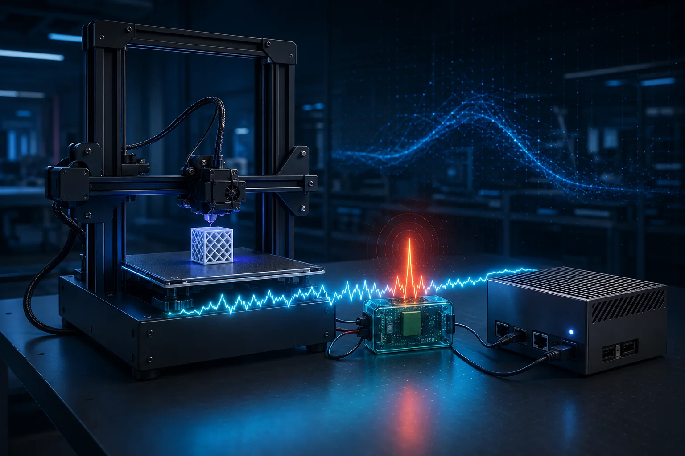

012021-2025
Ph.D. in Mechanical Engineering
University of South Carolina
Thesis / dissertationRecognizing the Unexpected: Deep Learning Across Complex Environments
Academic profile · 2026
Postdoctoral Research Associate
Department of Mechanical Engineering
University of Connecticut
I am a mechanical engineering researcher developing artificial intelligence methods for manufacturing, robotics, and complex physical systems. My work connects data-driven learning with real-world sensing, physical behavior, and deployable engineering applications.
01 / EDUCATION
A mechanical engineering foundation shaped by robotics, deep learning, and intelligent systems.
University of South Carolina
Thesis / dissertationRecognizing the Unexpected: Deep Learning Across Complex Environments
Boston University
Thesis / dissertationComparison of Tracking Algorithm for Differential Drive Robots
Nanjing University of Science and Technology
Thesis / dissertationDesign of Automatic Sorting System for Parts
02 / NEWS & UPDATES
Selected milestones from my latest research and scholarly activities.
Paper accepted
Paper accepted
Conference presentation
03 / RESEARCH
AI methods grounded in real-world sensing, physical constraints, and deployable systems.
Developing data-efficient, physics-aware methods that reuse local microstructure knowledge to support analysis of larger electrode domains.

A side-channel energy auditing system for real-time anomaly detection in robotic and 3D-printing processes on edge devices.
An ongoing explainable spatial-AI project connecting physical, community, and regional context to proactive railroad-crossing safety decisions.
A real-time safety platform that learns normal pedestrian motion from skeleton trajectories, then detects and localizes risky behavior at railroad grade crossings.
04 / PUBLICATIONS
arXiv preprint, arXiv:2606.11605
Neurocomputing, vol. 696, 134135
Expert Systems with Applications, vol. 321, 132321
Pattern Recognition, 113004
Applied Soft Computing, 113167
The International Journal of Advanced Manufacturing Technology, 1-17
Pattern Analysis and Applications, vol. 28, article 2
Annual Conference of the PHM Society, vol. 17
Applied Sciences, vol. 14, no. 14, 6202
Nano Letters, vol. 24, no. 5, 1494-1501
Engineering Applications of Artificial Intelligence, vol. 126, 107110
Future Generation Computer Systems, vol. 149, 376-389
Applied Intelligence, vol. 53, no. 19, 21676-21691
Annual Conference of the PHM Society, vol. 15
IEEE SoutheastCon 2023, 677-684
Neural Computing and Applications, vol. 34, no. 24, 22099-22113
05 / CONTACT
I'm interested in research conversations and collaborations across AI, manufacturing, robotics, and data-driven physical systems.